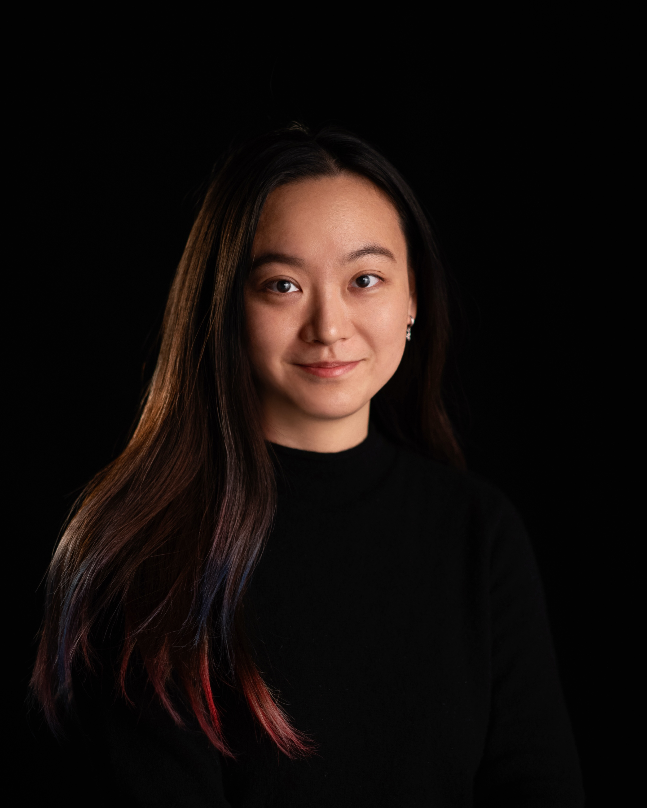

Puzhen is a Chinese animation director specialising in handmade stop-motion animation. She holds an MFA in Directing Animation from the National Film and Television School (NFTS), UK.
Rooted in the Chinese female gaze, her work pursues both innocent, tender perspectives and harsh, realistic themes — always through tactile, handcrafted imagery.
Her latest film, Deep End, explores experimental approaches to 3D-printed puppetry, combining diverse materials to simulate water-based visual effects.
张朴真是一位中国动画导演，毕业于英国国立电影电视学院的动画导演专业。她专注于触感丰富的手工偶定格动画，并积极探索创新的技术实验。以中国女性凝视为创作根基，她的作品同时追求纯真细腻的视角与直面现实的主题。